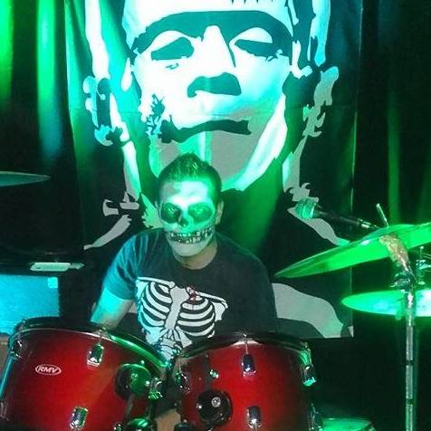
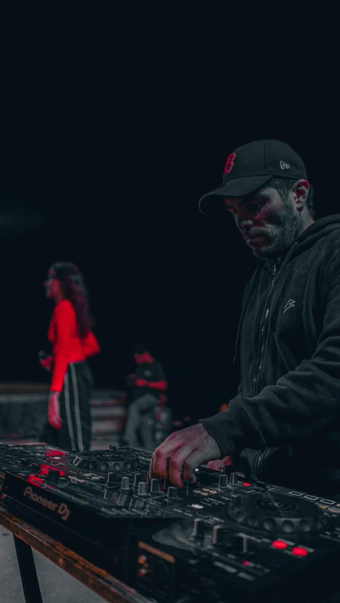

Maikondemaik surge de la mezcla de distintos generos musicales, podes ver algunos de los videos en nuestra pagina de Youtube Channel. Fue un camino largo para llegar hasta aca, aca abajo podes ver un poco del camino recorrido, en distintas bandas en el correr de los años.

Como bajista en Antibanda fue la mejor epoca para crecer como artista, con giras internacionales, grabacion de discos y videoclips

Monster Mash fue una banda que surgio con la necesidad de poder darle mas vida al Horror Punk en Uruguay, con muchas idas y vueltas en el 2017 termino por completo la banda, grabando solo un

Despues de una trayectoria como Dj de 8 años, surge la posibilidad de ser el Dj de una nueva artista como Francesca, donde compartimos escenarios con muchos artistas que ya estan consagrados en nuestro pais.